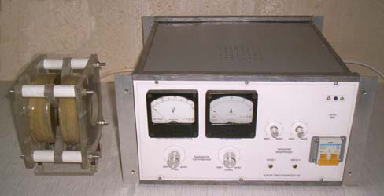
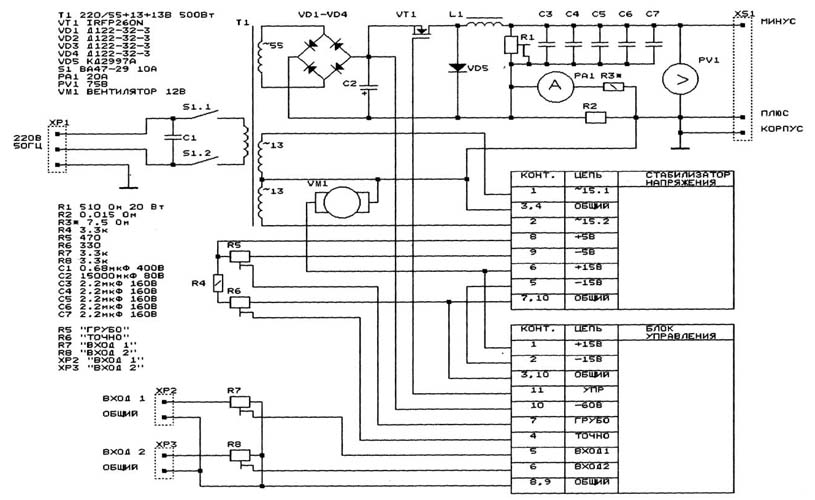
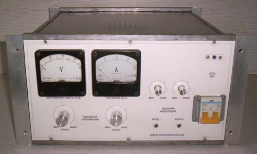
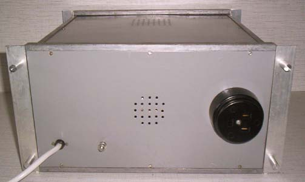

Импульсный регулируемый блок питания 0
... -50 В с максимальным
выходным током до 20 А и двухканальным внешним управлением

Назначение
Блок питания предназначен для получения регулируемого по величине выпрямленного напряжения и может использоваться для питания различных индукторов [1], электромагнитов [2, 5, 6], соленоидальных систем [3, 4], исполнительных электродвигателей, других активных и индуктивных нагрузок. В блоке питания предусмотрена возможность внешнего управления от двух независимых источников (например, для стабилизации выходных параметров или для получения низкочастотной амплитудной модуляции).
Технические данные:
Конструкция
Электрическая принципиальная схема блока питания приведена на рис. 1.

Рис. 1. Схема электрическая принципиальная блока питания.
Блок питания построен по схеме регулятора с широтно-импульсной модуляцией. Напряжение со вторичной обмотки трансформатора T1 подается на диодный мост VD1-VD4 с фильтром C2. Выпрямленное и отфильтрованное напряжение поступает на импульсный ключ VT1, на выходе которого создаются импульсы напряжения частотой 16 кГц переменной длительности. Для фильтрации выходного напряжения служит LC-фильтр L1C3C4C5C6C7 с демпфирующим диодом VD5. Измерение выходного напряжения и тока производится вольтметром PV1 и амперметром PA1. Потенциометры R5, R6 служат для грубой и точной ручной регулировки выходного напряжения. Потенциометры R7, R8 необходимы для задания внешних управляющих напряжений. Вентилятор VM1 предназначен для выравнивания температуры внутри прибора. Блок питания выполнен в виде переносного прибора. Несущим элементом конструкции является корпус. В корпусе установлена монтажная панель, на которой смонтированы узлы блока питания. К корпусу крепятся передняя и задняя панели, на которых расположены органы управления, подключения и индикации. Сверху и снизу корпус закрывается крышками. Внешний вид блока питания показан на рис. 2 и 3.

Рис. 2. Блок питания: вид спереди.

Рис. 3. Блок питания: вид сзади.
Состояние разработки:
Блок питания используется в лабораторных условиях для проведения экспериментов, связанных с получением постоянных и переменных магнитных полей, для испытания различных устройств, а также в технологических целях. В частности, с помощью него и магнитного индуктора [3, 4] может производиться обработка биологических объектов и медицинских препаратов магнитным полем, промодулированным по амплитуде сложным звуковым (музыкальным, речевым или кодированным) сигналом с внешнего источника.
Ссылки:
13.10.2008
12.01.2009
29.08.2012
19.06.2013
01.07.2018
Альтернативные источники
энергии
Компьютеры и
Интернет
Магнитные поля
Механотронные системы
Перспективные
разработки
Электроника и технология